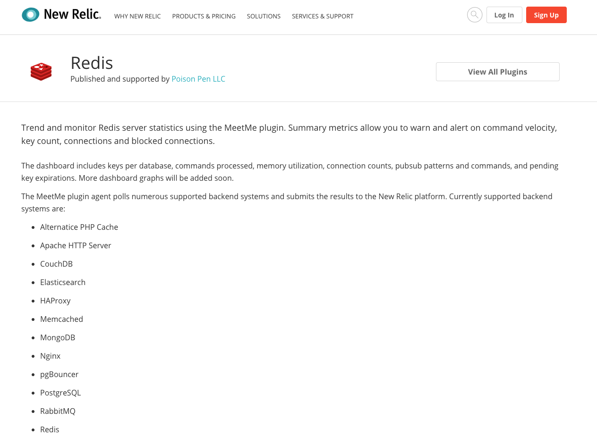
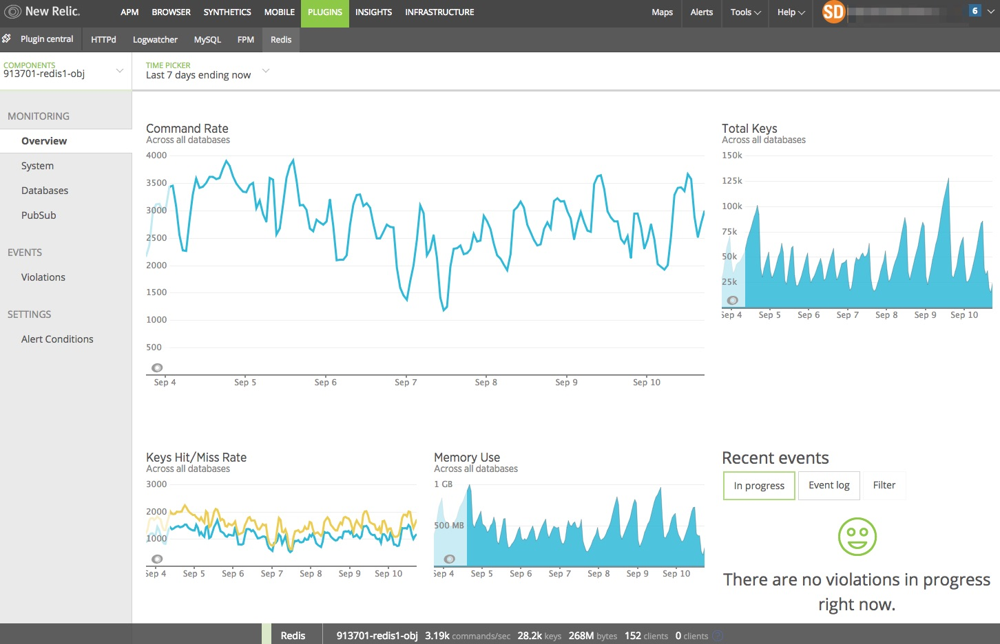
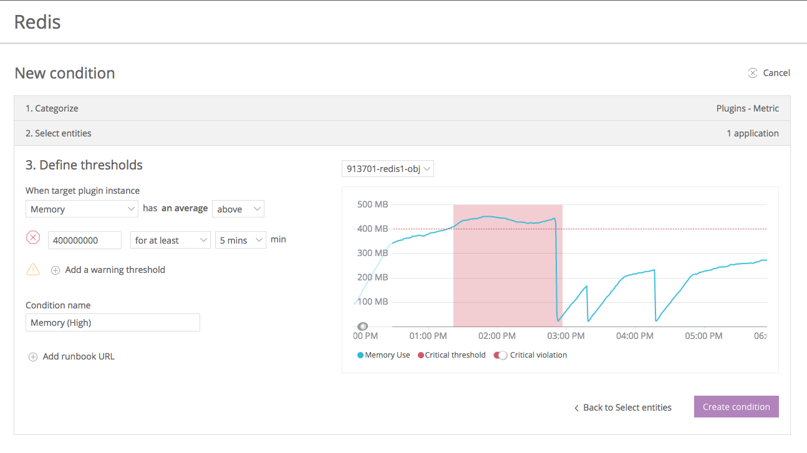
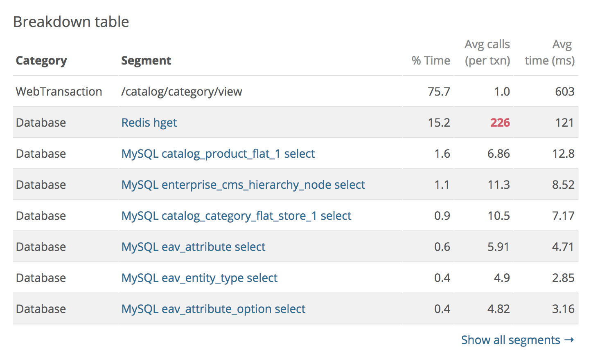
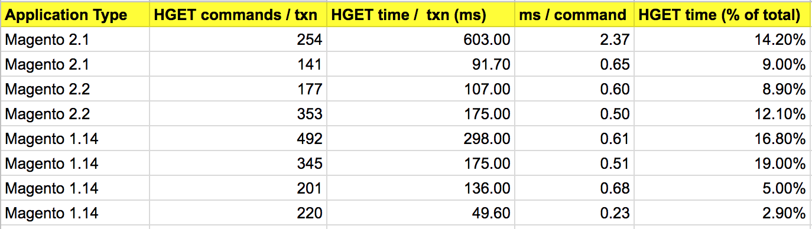

Redis for Magento Developers
Who Am I?
- Technical Lead for Strategic Engagement Group at Something Digital (Magento Enterprise Solution Partner)
- Actively blogging about Magento and other technology
- Top 50 Magento Contributor 2017
What Will We Cover?
- The basics: What is Redis? Why Redis? Basic Usage? How Magento uses Redis?
- Intermediate tips: Redis configuration tips. Security concerns
- Expert level: Performance considerations. Debugging tips
The basics
What is Redis?
Redis is an open source, in-memory data structure store, used as a database, cache and message broker


Why Redis?
How Magento Uses Redis
Redis Hashes / Hash Commands
HGETALL hashHGET hash fieldHSET hash field "value"HMSET hash field1 "value1" field2 "value2"Intermediate tips
Memory Management
Monitor Memory Usage
Monitor Memory Usage
Configure Alerts
Use separate instances
maxmemory-policies
maxmemory-policies
maxmemory-policies
allkeys-lru is the safest!Security
Security
Expert Level
Performance
"Usually Redis processing time is extremely low, in the sub microsecond range"Performance
"It is a good practice to use the ping program to quickly check the latency between the client and server hosts"Performance
Magento is very chatty with Redis
Performance
Survey of /catalog/category/view for 8 production Magento instances
Reading the slowlog
Every entry is composed of four (or six starting with Redis 4.0) fields:
- A unique progressive identifier for every slow log entry.
- The unix timestamp at which the logged command was processed.
- The amount of time needed for its execution, in microseconds
- The array composing the arguments of the command.